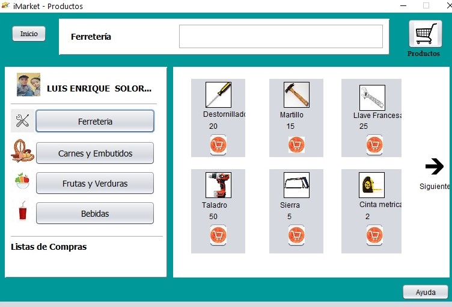

Al utilizar la aplicación de listas de compras se busca agilizar y modernizar el uso de la tecnología, se parte de las necesidades del cliente final, ya que al utilizar la interface de lista de compras genera un ambiente fácil de manejar y estándar para todos los usuarios que lo utilicen.
Disponer de esta aplicación, al realizar un presupuesto antes de realizar la compra favorece al usuario con herramientas que le permitan facilitar las tareas diarias que realiza, teniendo una idea previa del costo de cada producto lo llevará a realizar una compra que se ajuste con la economía de cada usuario.
